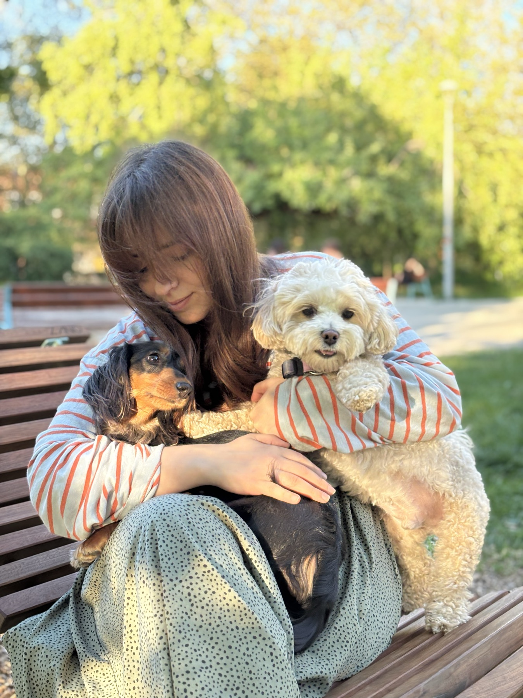
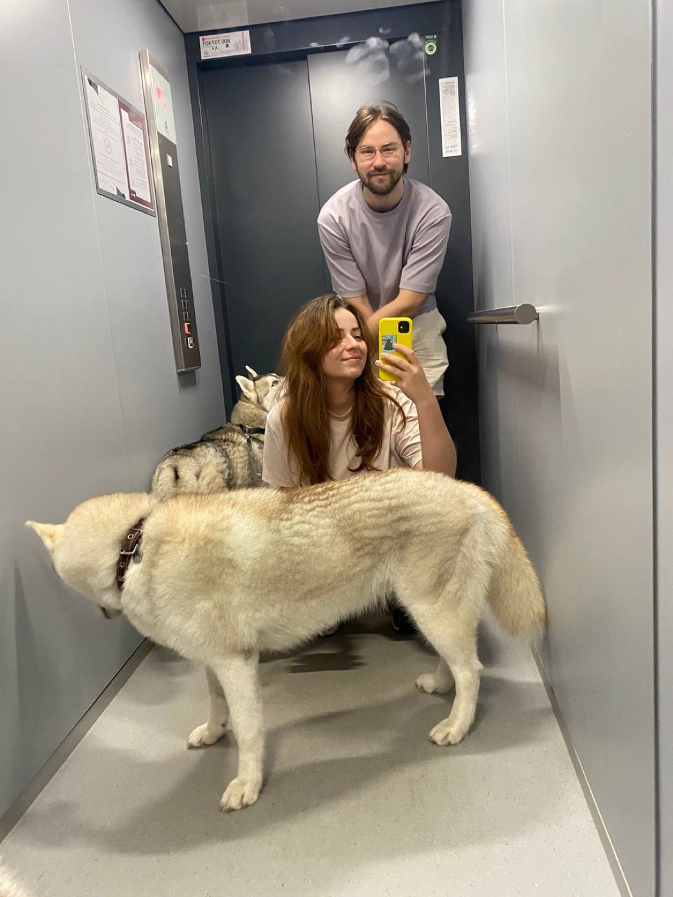
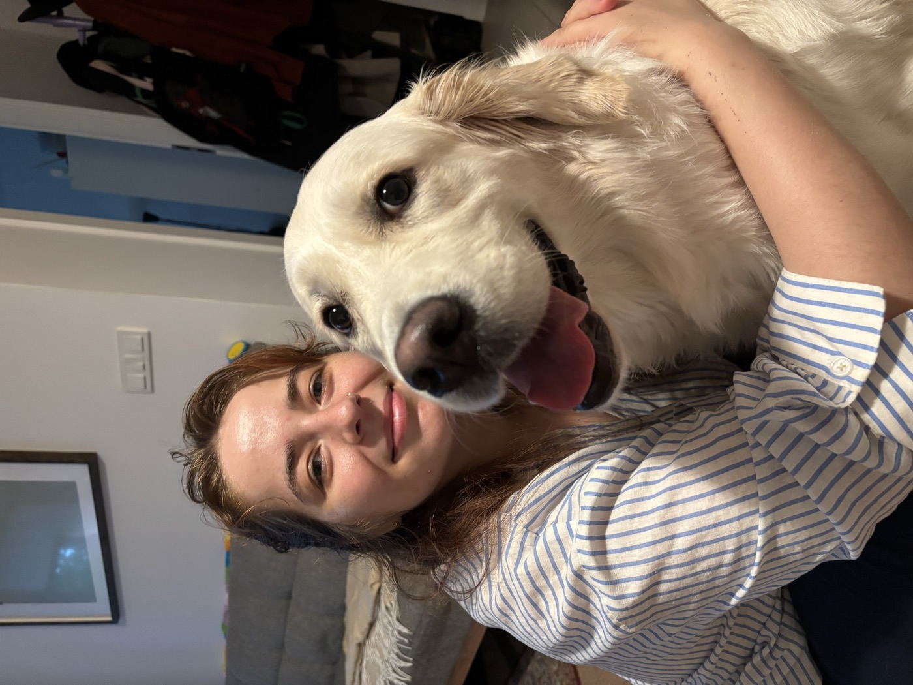
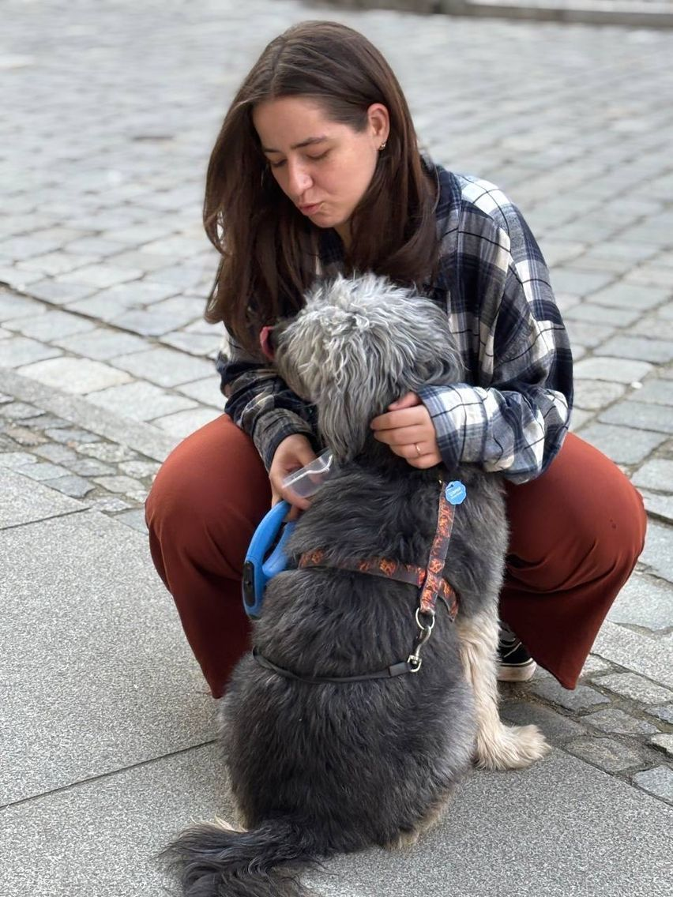
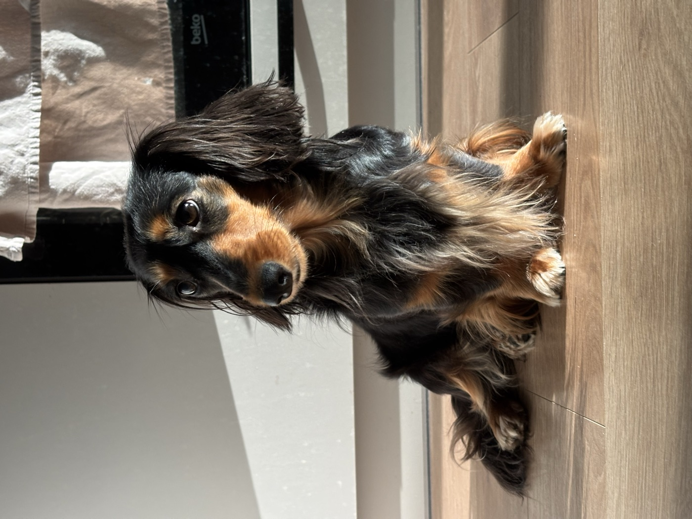
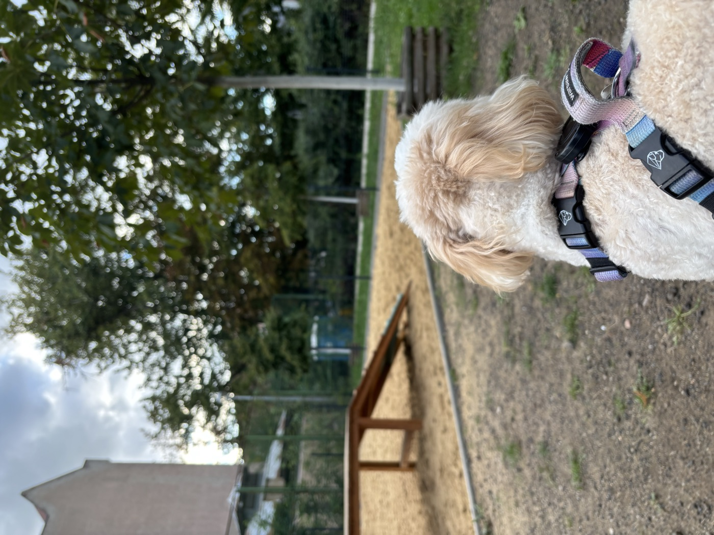
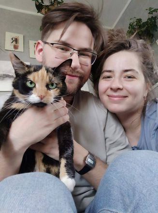

Nocleg
Domowa opieka, regularne spacery, karmienie i fotorelacje podczas całego pobytu.
149 zł / dzień roboczy
169 zł / weekend
169 zł / weekend
Opiekujemy się psami i kotami tak, jak sami chcielibyśmy, aby ktoś zaopiekował się naszym pupilem: uważnie, spokojnie i z regularnym kontaktem z właścicielem.
Szybka odpowiedź • Wrocław, okolice Kolejowej • PL / EN / RU

Cena zależy od terminu, rodzaju opieki oraz indywidualnych potrzeb pupila. Aktualną wycenę możesz sprawdzić po podaniu szczegółów rezerwacji na Petsy.
Domowa opieka, regularne spacery, karmienie i fotorelacje podczas całego pobytu.
Spokojny dzień w domowych warunkach zamiast wielu godzin samotnego czekania.
Karmienie, zabawa, kuweta lub krótki spacer w dobrze znanym otoczeniu.
Spokojny lub aktywny spacer dostosowany do wieku, kondycji i temperamentu psa.
Stawka weekendowa obowiązuje od piątku do niedzieli oraz w dni świąteczne. Cena końcowa może zależeć od terminu oraz indywidualnych potrzeb pupila.
Usługi o ograniczonej dostępności dla właścicieli, którym zależy na większej wyłączności i indywidualnym podejściu.
Podczas pobytu przyjmujemy wyłącznie Twojego psa. Bez innych zwierzęcych gości.
To dobre rozwiązanie dla psów lękliwych, reaktywnych, starszych albo po prostu najlepiej czujących się w spokojnym otoczeniu.
Pakiet dla naszych stałych klientów, którzy regularnie korzystają z opieki i chcą wygodniej planować kolejne pobyty.
*Pierwszeństwo nie oznacza gwarancji dostępności. Szczegółowe warunki pakietu potwierdzamy przed jego uruchomieniem. Opieka nad szczeniakiem, podawanie leków albo potrzeba stałej obecności mogą wymagać indywidualnej wyceny.


Pracujemy zdalnie, dlatego przez większość dnia możemy być blisko naszych podopiecznych. Obserwujemy ich samopoczucie, dopasowujemy aktywność do ich potrzeb i pozostajemy w regularnym kontakcie z właścicielem.




Termin, wiek, charakter, dieta, spacery, leki oraz relacje z innymi zwierzętami.
Sprawdzamy dostępność i wspólnie ustalamy, czy nasze warunki odpowiadają potrzebom Twojego pupila.
Trzymamy się ustalonej rutyny, obserwujemy samopoczucie pupila i regularnie wysyłamy wiadomości oraz zdjęcia.
Na koniec opowiadamy, jak minął pobyt, jak wyglądały spacery, apetyt i samopoczucie pupila.
„Super komunikacja, doskonała ręka do zwierząt. Pies zadowolony i ja również.”
„Fajni ludzie posiadający rękę do zwierząt. Mój psiak zadowolony. Na pewno jeszcze skorzystam.”
„Everything super, flexible, good communication in English and Polish. Took great care of our dog.”
Tak. Przed potwierdzeniem omawiamy rytm dnia, częstotliwość spacerów, leki oraz wszystkie szczególne potrzeby.
Tak, po otrzymaniu jasnej instrukcji od właściciela. Opisz nazwę leku, dawkowanie i sposób podania.
Regularnie podczas pobytu. Częstotliwość możemy dopasować — wiemy, że dla wielu właścicieli kontakt jest bardzo ważny.
Nie mamy własnych zwierząt. Każdą rezerwację oceniamy indywidualnie, również pod kątem ewentualnego kontaktu z innymi gośćmi.
Karmę z instrukcją, smycz i szelki, leki, książeczkę zdrowia oraz ulubione posłanie lub zabawkę.